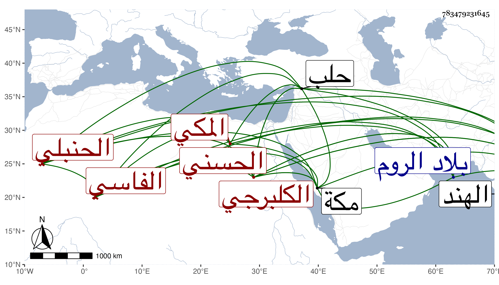

0902Sakhawi.DawLamic.ITO20230111-ara1.EIS1600.783479231645
Biography ID: 783479231645
491
حسن بن محمد بن أبي الفتح محمد بن أحمد بن أبي عبد الله محمد بن محمد ابن عبد الرحمن الحسني الفاسي الكلبرجي ثم المكي الحنبلي . ولد ببلاد كلبرجة من الهند وحمل إلى مكة وهو ابن نحو عشر سنين بعد الثلاثين وثمانمائة ، وسمع بها من التقي بن فهد ، وأجاز له باستدعاء ولده النجم عمر جماعة ، ودخل مع عمه عبد اللطيف بلاد العجم بعد الأربعين وثمانمائة فوصلا إلى الروم ثم حلب وكانت منيته بها ودفن هناك رحمه الله .
